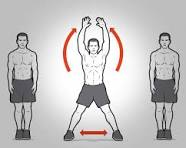

Treinar é sentir que você pode fazer algo que depende do seu esforço e da sua determinação. Quanto mais motivado você estiver, melhores vão ser os resultados!

- A corrida no lugar é um exercício físico em que a pessoa simula correr, movendo rapidamente as pernas em um espaço limitado, como em uma esteira ou em um local fixo no chão. É uma forma conveniente de exercício cardiovascular que pode ser realizada em ambientes fechados e não requer muito espaço. Essa atividade ajuda a aumentar a frequência cardíaca, queimar calorias e melhorar a resistência aeróbica, semelhante à corrida ao ar livre, mas sem a necessidade de se deslocar.

- O deslocamento lateral é um movimento em que uma pessoa se move para os lados, mantendo os pés paralelos ao solo e sem cruzá-los. É comumente usado em atividades físicas, como exercícios de condicionamento físico, treinamento esportivo e dança. Esse movimento pode ajudar a fortalecer os músculos das pernas, melhorar a agilidade, a coordenação motora e a estabilidade do core. O deslocamento lateral é frequentemente incorporado em rotinas de exercícios para promover o desenvolvimento de habilidades específicas necessárias em diversos esportes e atividades físicas.

- A rotação de tronco é um movimento em que a parte superior do corpo, incluindo os ombros, os braços e o peito, se movem lateralmente em direções opostas. Este movimento envolve girar o tronco em torno da coluna vertebral. É comumente realizado em exercícios de alongamento, flexibilidade e fortalecimento, bem como em atividades esportivas como golfe, tênis e natação. A rotação de tronco pode ajudar a melhorar a flexibilidade da coluna vertebral, fortalecer os músculos abdominais, dorsais e oblíquos, além de promover uma postura melhor e reduzir o risco de lesões nas costas.
- O polichinelo é um exercício aeróbico de corpo inteiro que envolve movimentos de saltos, flexões e extensões dos membros superiores e inferiores. Para executar um polichinelo, você começa em pé com os pés juntos e os braços ao lado do corpo. Então, em um movimento rápido, você salta para cima, estendendo os braços acima da cabeça e as pernas para os lados. Em seguida, você volta a juntar os pés e as mãos ao lado do corpo, repetindo o movimento em um ritmo acelerado. O polichinelo é um exercício eficaz para elevar a frequência cardíaca, queimar calorias, melhorar a coordenação e a agilidade, além de fortalecer os músculos das pernas, braços, ombros e core. É frequentemente incorporado em rotinas de exercícios de aquecimento, treinamento cardiovascular e circuitos de alta intensidade.
- Fique em pé com os pés afastados na largura dos ombros.
- Abaixe o corpo dobrando os joelhos e os quadris, como se estivesse sentando em uma cadeira.
- Mantenha os joelhos alinhados com os dedos dos pés e a parte inferior das costas neutra.
- Desça até que as coxas fiquem paralelas ao chão (ou até onde for confortável).
- Empurre através dos calcanhares para retornar à posição inicial.
- Repita para o número desejado de repetições.
- Deite-se em um banco plano, segurando uma barra ou halteres sobre o peito com os braços estendidos.
- Lentamente, abaixe a barra em direção ao peito, mantendo os cotovelos alinhados com os ombros.
- Pause por um momento quando a barra estiver perto do peito.
- Empurre a barra de volta à posição inicial, estendendo completamente os braços.
- Repita para o número desejado de repetições.
- Segure uma barra fixa com as mãos na largura dos ombros e as palmas voltadas para longe de você.
- Levante o corpo até que o queixo esteja acima da barra, mantendo os cotovelos estendidos.
- Abaixe o corpo lentamente até que os braços estejam estendidos novamente.
- Repita para o número desejado de repetições.
- Fique em pé com os pés afastados na largura dos ombros, segurando uma barra com as mãos na largura dos ombros.
- Mantenha as costas retas e os ombros para trás.
- Agache-se, mantendo os quadris baixos e levantando a barra até os quadris.
- Estenda os quadris e os joelhos para levantar a barra até ficar em pé completamente.
- Lentamente, abaixe a barra de volta ao chão, mantendo as costas retas.
- Repita para o número desejado de repetições.
- Tome um banho antes e depois do treino para manter a higiene pessoal e prevenir a propagação de germes.
- Use desodorante e roupas limpas para minimizar o odor corporal.
- Lave as mãos com água e sabão antes e depois do treino, especialmente após usar equipamentos compartilhados.
- Mantenha-se hidratado bebendo água antes, durante e após o treino.
- Leve uma garrafa de água reutilizável e beba regularmente durante o treino para evitar a desidratação.
- Use equipamento de proteção adequado, como tênis adequados e roupas confortáveis e que permitam a movimentação livre.
- Considere usar luvas de treino para proteger as mãos ao levantar pesos ou usar equipamentos que possam causar atrito.
- Certifique-se de ter uma boa noite de sono para permitir a recuperação muscular adequada entre os treinos.
- Ouça o seu corpo e descanse quando necessário.
- Evite exagerar nos treinos, pois isso pode levar a lesões e fadiga excessiva.